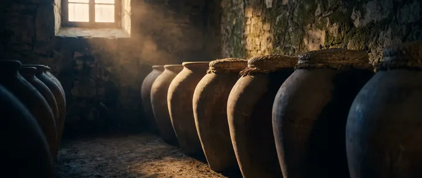
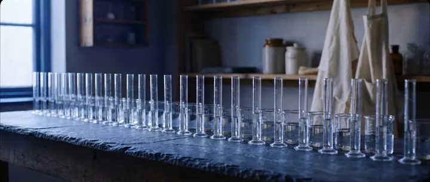
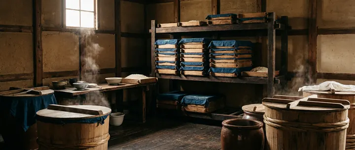
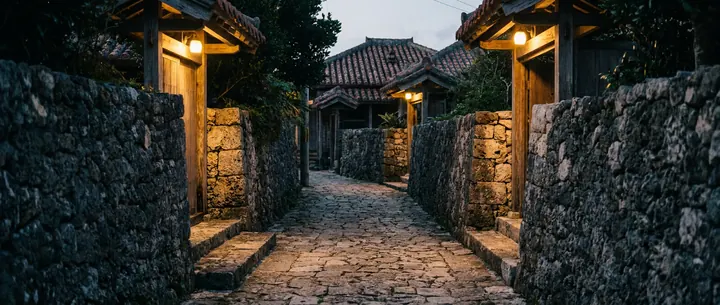

何から探しますか

636銘柄条件で絞り込む度数・古酒の年数・全量古酒かどうか・地域・種別を掛け合わせて探せます。253銘柄古酒から探す3年から50年まで。規約が求める「全量古酒」かどうかを併記しています。
605銘柄度数から探す10度から60度まで。30度・43度など度数ごとのページがあります。14銘柄花酒（60度）与那国島の3軒だけが造る60度。酒税法上は「原料用アルコール」になります。
見学可 19軒蔵見学ができる酒造所無料・有料・休止中まで、公式サイトの記載を確認日つきで分類しました。
47軒酒造所から探す沖縄県酒造組合が公開する全47軒。正式社名・所在地・創業年つき。47の酒造所は、島々に散らばっている
横にスクロールすると、東側（本島）まで見られます →
西から東へ並べた模式図です（実際の地図ではありません）。円の大きさは酒造所の数を表しています。 もっとも西にある与那国島には3軒、もっとも南の波照間島には1軒だけがあります。
このデータベースが他と違うところ
1. 古酒の「割合」を載せている
公正競争規約は全量が古酒でなければ「古酒」と表示できないと定めています。
公式が割合を明記している商品はその数字を、明記していない商品は「記載なし」と正直に表示します。
古酒を混ぜているのに古酒と名乗っていない商品が4件あり、それも一覧にしました。
2. 度数で横断できる
泡盛は10度から60度まで幅があります。全酒造所を横断して度数で並べた一覧は、
調べたかぎり他にありませんでした。
3. 出典の確度を1件ずつ出す
「酒造所の公式サイトで確認」「沖縄県酒造組合（準一次）」「出典サイトの運営主体を裏付けられず」を
レコードごとに区別しています。公式サイトが確認できない酒造所が5軒あることも隠しません。
4. 分からないことを「分からない」と書く
泡盛は公式に価格を出していない酒造所が多く、価格を確認できたのは423銘柄だけです。
残りは推測で埋めず「公式に記載なし」と表示しています。
読みもの
法令と公正競争規約の条文原文にあたって書いた解説です。要約や伝聞は使っていません。
01
泡盛の「古酒（クース）」は何年から？ 公正競争規約の条文で確認する
泡盛の古酒は3年以上貯蔵かつ全量が古酒。公正競争規約と施行規則の条文原文、2013年改正の前後比較、施行日の正確な位置づけ、実際の商品での確認までまとめた。
02
泡盛の度数はなぜ30度と43度に集まるのか — 662件を数えた
泡盛の度数は10度から60度まで28種類ある。46酒造所の662件を数えると、30度と43度だけで半分を占めた。度数帯ごとの中身と、酒税法・公正競争規約が引いた45度と25度の線を条文で確認する。
03
泡盛と焼酎は何が違うのか — 法令の定義で確認する
泡盛は酒税法上の品目名ではなく単式蒸留焼酎の例外表示。公正競争規約と酒税法の条文、黒こうじ菌と全麹仕込み、GI「琉球」の生産基準を原文で確認する。
04
花酒とは — 与那国島だけの60度と、その酒税法上の扱い
与那国島の3酒造所だけが造る60度の花酒。酒税法の条文でたどる「原料用アルコール」という品目と、ラベルに泡盛と書ける根拠をまとめた。
05
幻の泡盛「泡波」とは — 公式が示す価格と、手に入りにくい理由
日本最南端の波照間酒造所が造る泡盛「泡波」。公式が示す容量別の価格表と、公式・準公式で確認できた入手困難の理由だけをまとめた。
06
泡盛のカロリーと糖質 — 糖質0gの根拠と、度数からの計算式
泡盛の糖質は0g。カロリーはすべてアルコール由来で、度数から計算できる。文部科学省の食品成分表と厚生労働省の式を原文で引き、度数別・容量別の実数値を出した。
07
どなんとは — 与那国島の60度と、社名が3通りある話
「どなん」は与那国島の酒造所が造る花酒の銘柄名であり、島の古い呼び名でもある。度数60度、酒税法上の品目は原料用アルコール。公式が示す価格と、社名が3通りに割れている件までを一次ソースで確認する。
08
泡盛の受賞歴はどこまで確かめられるか — 47蔵のうち2蔵しか整理していない
泡盛の受賞歴を公式に整理して公開しているのは47蔵中2蔵だけだった。115件を集めて分かった、コンテスト名の略称・部門名・賞の呼び方のばらつきと、本サイトが補わずに載せている理由。
09
泡盛に「定価」が見つからないのはなぜか — 47蔵を全部調べた
泡盛は公式サイトに価格を出していない酒造所が多い。47蔵を全数調査すると、13蔵は公式価格を1件も確認できなかった。税込・税抜の記載も揃っていない。何が確認できて何ができないのかを数字で示す。
10
泡盛の容量 — 四合瓶・一升瓶・五升甕、831件を数えた
泡盛の容量は100mlから18,000mlまで22種類。720mlと1,800mlで65%を占める。尺貫法の呼び名と実際の分布、そして「三合瓶」と呼ばれる600mlの扱いまで、831件の実データで確認する。
掲載情報について
正式社名・所在地・創業年・度数・容量・価格は、各酒造所の公式サイトで確認したものを載せています。 公式サイトが確認できない5軒は沖縄県酒造組合の情報によっており、その旨を明示しています。 最終確認日は2026年8月30日です。このサイトについて